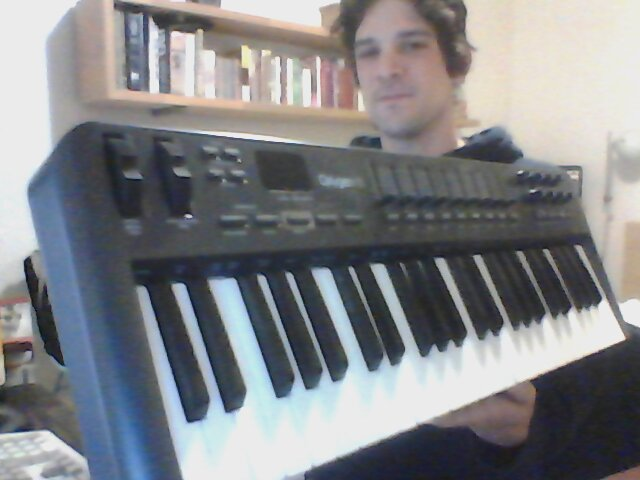
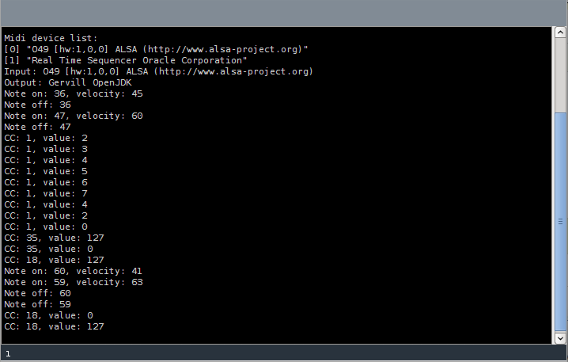
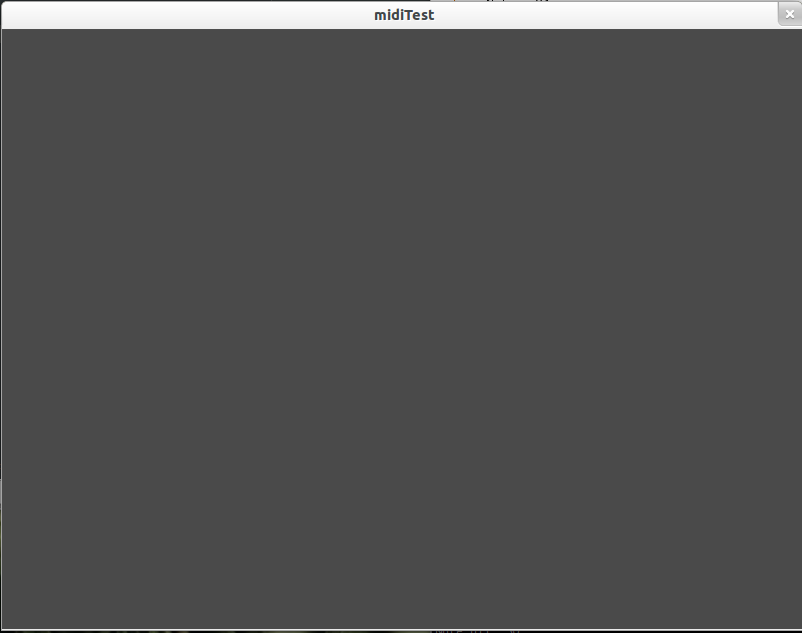

One of the coolest things about taking Interactive Digital Arts at the University of Oregon this spring was being introduced to the Processing programming environment. It's open source, easy to get started with, and provides the simplest way I've seen to quickly get interactive animations up on the screen. I've been interested in experimental music since forever, and lately I've been thinking about ways to combine sound with visualizations in a way that is immediately immersive and intuitive to use, while at the same time being more interactive than, say, an ITunes animation using beat detection.
For this project I wanted to focus on controllers; something that I could use to interact with both sound and visuals simulataneously. I thought about building a custom controller using an Arduino or maybe a hacked computer keyboard, and while both could produce really unique results, they wouldn't be very flexible or reproducible without an awful lot of work. I also considered using a Wiimote, but while someone has written a Wiimote library, it seemed very 'alpha.' I wanted something solid and useable without a lot of headaches. It took me two days to realize that I had a dusty M-Audio Oxygen49 MIDI keyboard leaning up against the side of my desk the whole time!
It's got rows of assignable rotary knobs, buttons and sliders, and although it wasn't immediately clear just how those would translate to manipulation of graphics on a comupter screen, there was enough suggestion of possiblity to be exciting.
A little googling yeilded the materials I needed: a solid Processing library called rwmidi with decent documentation. I also found a good example of how it might be used, and what the corresponding code might look like. Although this isn't quite how I imaginged using it, it's pretty darn cool nonetheless. Check it out:
There was no guarantee that it was going to work on my favored OS, Ubuntu 11.10, but after dropping it into my newly created sketchbook -> libraries folder, I was good to go (installing Processing on Ubuntu in the first place was another matter; for more on that, start here. I had to replace Processing's included Java package with the latest version from the Sun website.)
I needed a good code snippet to get started with, so I grabbed the sample code on the rwmidi website, and toyed with it until I got all of the functionality I was looking for.
import rwmidi.*;
MidiInput input;
MidiOutput output;
int maxNote = 84;
int minNote = 36;
int numNotes = maxNote-minNote;
int notePlayed = (maxNote+minNote)/2;
void setup() {
size(800, 600);
background(notePlayed);
println("Midi device list:");
println(RWMidi.getInputDeviceNames());
input = RWMidi.getInputDevices()[0].createInput(this);
output = RWMidi.getOutputDevices()[0].createOutput();
println("Input: " + input.getName());
println("Output: " + output.getName());
}
void noteOnReceived(Note note) {
notePlayed = note.getPitch();
println("Note on: " + note.getPitch() + ", velocity: " + note.getVelocity());
}
void noteOffReceived(Note note) {
println("Note off: " + note.getPitch());
}
void controllerChangeReceived(Controller controller) {
println("CC: " + controller.getCC() + ", value: " + controller.getValue());
}
void draw() {
background(255*(notePlayed-minNote)/(numNotes));
}
Basically I just wanted to get Processing to show a number every time I pressed a key, twiddled a knob, etc. Later I can use those input values to control, say, the diameter of a sphere or height of a sine wave. In MIDI, the input values are integers that vary from 0 to 127. Here's what the output looks like on Processing's command line:
My test script also has a very simple "draw" command that changes the window to a different shade of gray depending on which key is pressed. Here's "middle C:"
Still not quite an "immersive visual experience," I admit. Looks like it's time to get creative!
Update:
Check out the progress of an app I've been working on using
midi control
here.